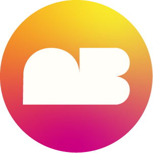
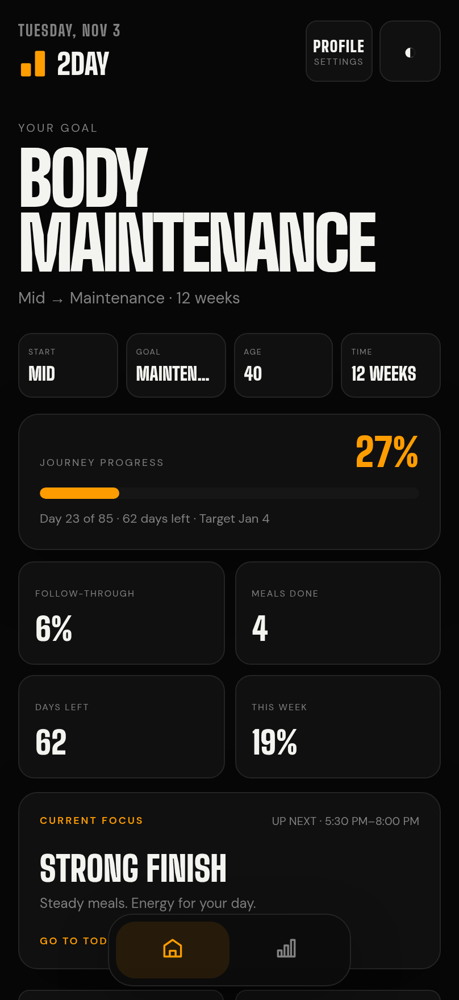
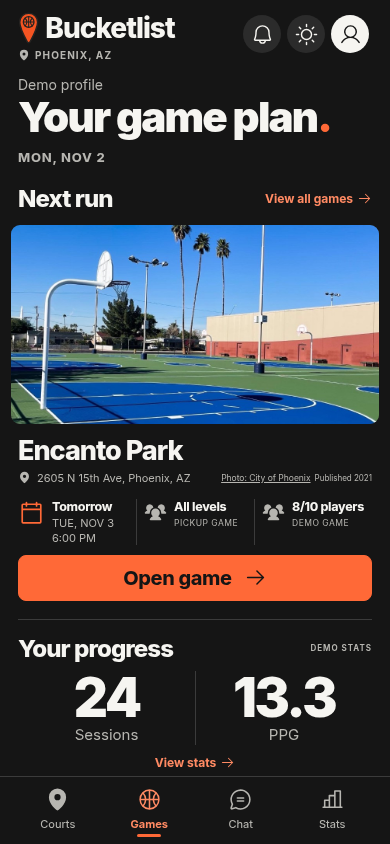

Product engineering
Turning real tickets into product fixes, working behavior, and testable improvements.

Adonnis BlakeDesign Engineer · UI · Front-endDesign Engineer · Open to roles
I’m Adonnis Blake, a design engineer with a concept art and UI/UX background. I ship working front-end, design the flows behind it, and test every change in the live product. I use Claude to move faster on reasoning and edge cases; the decisions and the code review are mine.
Stack & practices
The quick read
I learned to communicate through images, stories, and interfaces before I wrote product code. That perspective shapes how I read tickets, map user journeys, work with AI, and test what people actually experience.
Turning real tickets into product fixes, working behavior, and testable improvements.
Concept art, comics, and UX trained me to see the whole journey — not just a screen or line of code.
Using Claude as a build partner to reason through code, edge cases, and solution paths.
Checking changes against the actual product so the work moves past theory into proof.
Creative foundation
Drawing, comics, anime, and sci-fi made me curious about how worlds work. Design taught me to turn that curiosity into hierarchy, flows, and visual clarity. Engineering lets me make those ideas useful — and test whether they work.
Product engineering workflow
This is the loop I follow on every build: understand the ticket, reason through options (with Claude where it helps), make the smallest safe change, test the behavior live, then document what changed. The proof is in the repos: this site’s own repo runs automated checks for color contrast, broken links, and translation coverage.
AI-assisted product loop
What it is:The ticket is the source of the product problem: expected behavior, current behavior, user impact, and the constraints around the fix.
How I use it:I slow the issue down before touching the build. I look for what needs to change, what could break, and what “done” should look like in the product.
Why it matters:The solution starts with the actual problem instead of guessing from the interface alone.
What it is:Claude is a reasoning and build partner that helps compare code paths, possible causes, edge cases, and implementation options.
How I use it:I use it like a senior pair-programming assistant: ask better questions, test assumptions, compare possible fixes, and avoid overbuilding the solution.
Why it matters:AI helps me move faster, but the work stays connected to the ticket, the user need, and the product behavior I need to prove.
What it is:The build step turns the reasoning into a working change: UI behavior, product logic, layout adjustment, or bug fix.
How I use it:I aim for the smallest safe change first. The goal is not to complicate the code — it is to make the product behave correctly.
Why it matters:Smaller changes are easier to review, easier to test, and easier to explain to the people depending on the product.
What it is:Live testing checks the change inside the actual product flow instead of only trusting the code, the mockup, or the AI suggestion.
How I use it:I test the before-and-after behavior, make sure the expected result happens, and watch for anything that feels confusing or broken for the user.
Why it matters:The work becomes proof-based: ticket → build → observed behavior.
What it is:Documentation explains what changed, why it changed, how it was tested, and what someone else should know when reviewing the work.
How I use it:I capture the important decisions, test notes, and product behavior so the solution is easier to review, revisit, and build on later.
Why it matters:Clear documentation turns a fix into shared understanding — and that is where design judgment supports engineering work.
Selected work
The apps lead: designed, built, and tested live. Brand and web work follows.

Design Engineering · Built and tested live

Product Engineering · Basketball Community
Web Strategy · Brand + Web Studio
Brand Identity · Environmental Graphics
Featured case / Product Engineering
2DAY is still a product build journey, but the focus now sits closer to product engineering: translate the user goal, shape the logic, use AI assistance to accelerate the build, test the working version, and keep the interface simple enough that the next action is obvious.
Role: Design, front-end build, and live testing. Status: Live on GitHub Pages. Source: GitHub repo.
Actual app layout
Product engineering / Bucketlist
Bucketlist brings court discovery, scheduled games, and team coordination into one clear mobile journey. Find a place to play, see the next run, and keep the path from planning to playing easy to follow.
Role: Design, front-end build, and live testing. Status: Working prototype; games and stats are browser-local, shared chat uses authenticated accounts. Source: GitHub repo.
Actual app layout
Brand + web studio / Phalinx
Phalinx is a brand identity and website studio for small, growing businesses. The site has one job: help an owner see what they need, what it costs, and how to start, without a sales call.
Owners choose a brand, a website, or both built as one system, and can start with one piece and add the next later.
Compare three fixed-scope packages, preview a 50 / 25 / 25 milestone split for any of them, and send a scoped inquiry with budget, timing, and payment preference.
See the pricingScope, pricing, and process were defined before any layout. Each section then answers the next buyer question in order, and concept work is labeled fictional so trust is earned, not implied.
Visit PhalinxBrand identity / Neighbors Bar
Warm, loud, approachable, and built to work from a tiny bottle label to a huge painted wall.
Identity examples
Open the project to see logo marks, mood boards, signage, mural proof, and environmental applications.
Method
Start with the ticket, sketch the user journey, use Claude to explore solutions, build the smallest useful change, and test it live. Design gives the work direction; engineering makes it real.
Understand the issue, expected behavior, user impact, and where the change lives.
Sketch flows and possibilities, then use Claude and product logic to choose the clearest solution before changing the product.
Implement the solution, test it live, and check whether the user path still makes sense.
Keep the reasoning clear enough for GitHub, teammates, and future iterations.
Contact
Here’s my résumé and the fastest way to reach me. I’m happy to walk through any project, the decisions behind it, and how I tested it.